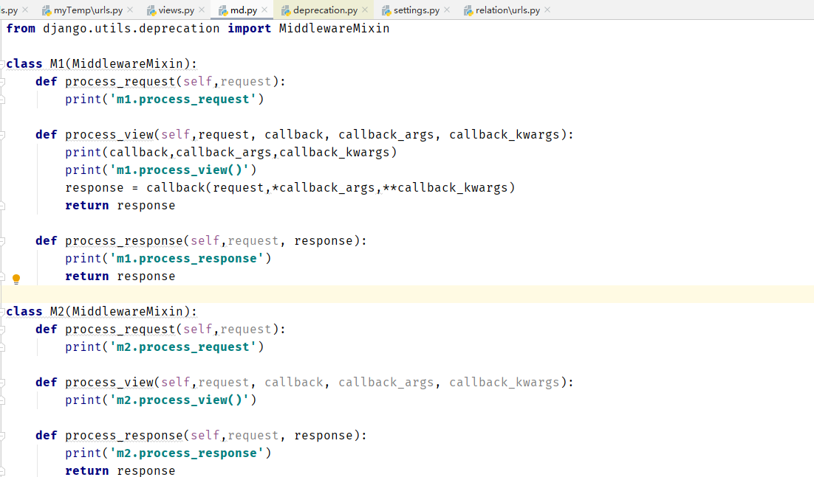
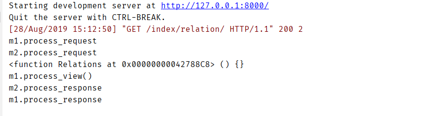

day76-04-mvc&mtv
MVC
model(模板) + view(html模板) + controlers(业务处理)
MTV
model(模板) + templates(html模板) + view(业务处理)
day76-05-中间件
什么是中间件
1：书写类-方法：
process_requests(requet)
process_response(request,response)
process_requests(requet) 可以返回return request，不能返回response
process_response(request,response) 可以返回responseday76-06-中间件
中间件的其他方法process_view()
中间的写法

执行顺序的打印

中间件在process_request中return request时？？day76-07-中间件
中间件的其他方法process_exception
这里的process_exception方法在django11中不适用？？？？？
day76-08-中间件
中间件的应用
批量对request做拦截
对指定的request返回缓存中的内容
day76-09-初识form
问题
13:22
1：无法记住页面提交的内容
2：输入长度的限制
3：重复对用户数据进行校验
定义规则
1:定义：
from django.forms import form
from django.forms import fields
class validform(Form):
xx = fields.CharField(required=True,max_length,min_length,error_message={
"required":"用户名错误"，
"max_length":"用户名错误"，
"min_length":"用户名错误"，
})2：使用
from中定义的内容，应该和html中定义的name的属性一致
html中标签的内容要与form中定义的字段一致
obj = validform(request.POST)
v = obj.is_valid()
#错误信息
obj.errors
#正确信息
obj.cleaned_data